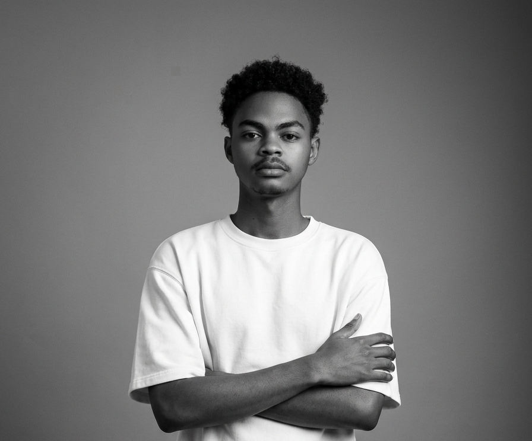

[ PARCOURS & PHILOSOPHIE ]

Vasilías
Je suis designer graphique et digital autodidacte avec deux années de pratique, et fondateur de Vasilías Studio. Mon parcours dans le design s'est construit à travers l'apprentissage personnel, l'expérimentation et la réalisation de projets créatifs. Cette démarche m'a permis de développer une approche polyvalente du design et une curiosité constante pour les nouvelles possibilités visuelles et numériques.
Je porte un intérêt particulier au branding et à la création d'identités visuelles. Pour moi, une identité de marque ne se limite pas à un logo : elle repose sur un ensemble cohérent de choix graphiques qui permettent à une entreprise d'exprimer sa personnalité, de communiquer clairement et de se distinguer.
À travers Vasilías Studio, je propose un accompagnement créatif dans la conception d'univers visuels et de supports de communication. Je travaille également sur des domaines complémentaires comme le design digital, l'UI/UX, le packaging et la création 3D. Mon objectif est de concevoir des solutions visuelles réfléchies, fonctionnelles et adaptées aux besoins de chaque projet.
En tant que designer autodidacte, je considère l'apprentissage et l'expérimentation comme des éléments essentiels de mon évolution. Chaque projet est une occasion d'affiner ma démarche, d'explorer de nouvelles idées et de développer mes compétences.
[ MÉTHODOLOGIE & APPROCHE ]
1. Immersion & Recherche : Analyse du contexte, positionnement du marché et définition de l'intention créative.
2. Exploration & Construction : Esquisses, grilles géométriques, recherches typographiques et déclinaisons modulaires.
3. Finalisation & Livrables : Production des chartes visuelles, guides d'application et fichiers prêts pour l'impression ou le web.
[ BOÎTE À OUTILS & LOGICIELS ]